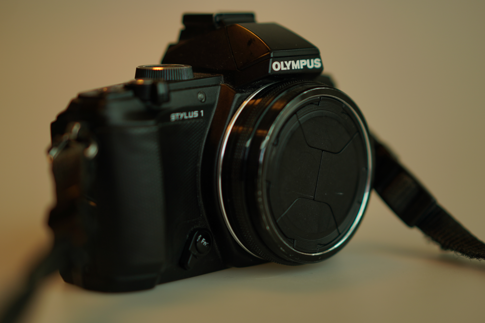
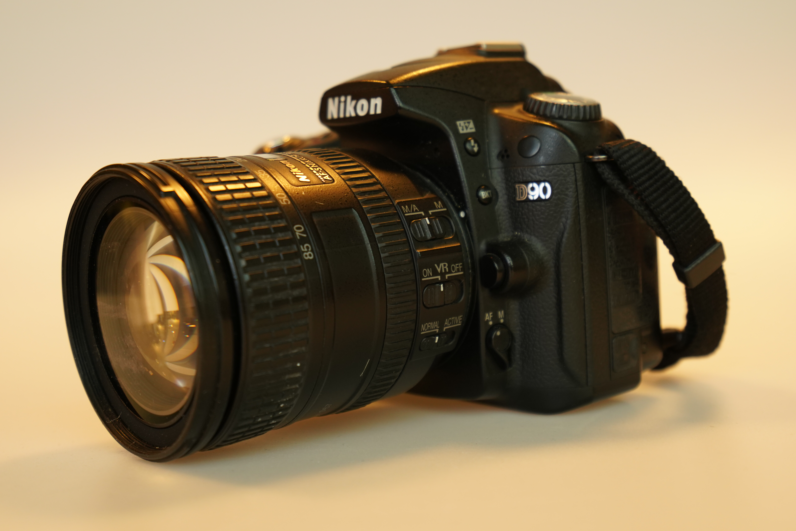

The Camera
Most cameras today are digital. Analog cameras has lost popularity over the last couple of decades, and it is fair on an introductory photo tutorial site to focus exclusively on the digital camera. There are three main types of cameras that we will cover here:
Point-and-shoot
These are the simplest to use (as the name implies) and offer the least amount of options when it comes to settings and manual control. A point-and-shoot camera also comes with a lens built into it. This lens cannot be replaced.
DSLR
DSLRs are cameras in which the light moves through the lens and hits a mirror that will redirect it to the viewfinder. This lets the photographer see exactly what the digital sensor will see, thus making it easier to frame the picture correctly. The mirror is in front of the sensor, so when the picture is taken, it must mechanically move in order to let light pass onto the lens. This explains one of the characteristics of DSLRs, namely the fact, that you’ll see a short, black flickering in the viewfinder just as the picture is taken.
Mirrorless
These are the newest type and have quickly become very popular. As there is no mirror in the camera, the viewfinder and the camera monitor are entirely electronic. As a result of this the cameras are typically smaller and lighter than the DSLRs, and as the distance from the mount ring to the sensor is shorter, they can be set up to work with many different lenses (with the use of adapters).
Camera Modes
A camera will typically have five different modes of operation. These modes are automatic, program, aperture priority, shutter priority and manual. You can shift between the operation modes using the large shift wheel on the top of the camera.
Automatic
The automatic modes is the simplest mode to use. All you have to do is click the trigger. The camera software will be in charge of all the settings for the image. This includes the shutter speed, the aperture, the ISO setting and the white balance. This is not just a great way to get started with taking photos, it is also a very useful setting, if your purpose is that of documenting where there is not a lot of time to mess with getting the settings right. The disadvantage is that you lose control of the camera priorities.
Aperture or shutter priority
In the two priority modes you gain control over either the aperture or the shutter speed and the camera will automatically choose the other. This means that in one mode you can decide the shutter speed to fit if your motive is still or fast moving or perhaps if you wish to add motion blur to your image while in the other mode you can adjust the aperture thus controlling the depth of field (bokeh) and let the camera decide on the shutter speed. These modes are great for fast photography, where you still want to retain control over one essential setting.
Manual mode
Contrary to the automatic mode, the manual mode offers you complete control over all camera settings. This of course is much more of a challenge and will require you to understand, what the settings do in order to choose the right ones for the task.It used to require a high level of experience or a considerable amount of calculating to figure out all the settings for the right exposure. This is currently becoming much less demanding as a new technology has gained popularity: The mirrorless camera.